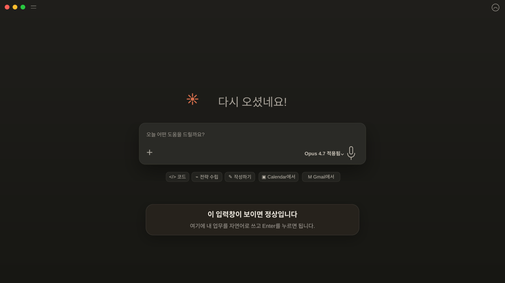

이 시리즈의 주인공은 Claude Code입니다. 1편은 그 전에 계정 로그인과 Claude 화면 감각만 5분 안에 맞추는 준비 편입니다. CLI나 MCP가 낯선 초보자라면, Desktop 커넥터로 먼저 시작하는 편이 훨씬 쉽습니다.
앱을 열었을 때 가운데 큰 입력창이 보이면 정상입니다. 작은 버튼 이름은 몰라도 괜찮고, 이 입력창에 내 업무를 자연어로 쓰면 됩니다.

이미 브라우저에서 claude.ai를 써봤다면, Claude Desktop은 그걸 앱으로 만든 것입니다. 기능은 거의 같은데, 쓸 때 느낌이 다릅니다.
이메일 다듬기, 단어 선택, 번역 등 짧은 질문을 자주 한다면 단축키로 바로 뜨는 앱이 훨씬 빠릅니다.
엑셀, 파워포인트, 이메일을 동시에 쓰는 분. 브라우저 탭 전환 없이 Claude를 쓸 수 있습니다.
Notion, Google Drive 같은 업무 앱을 커넥터로 연결하면 복붙을 줄이고 Claude가 자료를 참고하게 만들 수 있습니다.
터미널 없이도 Claude Code와 Claude Cowork를 Desktop 앱 안에서 바로 실행할 수 있습니다. 터미널이 익숙하지 않은 분께 특히 유용합니다.
아래 항목이 있으면 바로 시작할 수 있습니다.
설치 파일을 받아서 실행하면 됩니다. 일반 앱 설치와 완전히 같습니다.
.dmg 파일이 다운로드됩니다.
Claude.dmg를 더블클릭합니다.Cmd+Space → "Claude" 검색)에서 Claude를 실행합니다..exe 설치 파일이 다운로드됩니다.
Claude-Setup.exe를 더블클릭합니다.Claude를 쓰려면 Anthropic 계정이 필요합니다. 이미 있다면 로그인만 하면 됩니다.
| 요금제 | 월 비용 | 특징 |
|---|---|---|
| 무료 | $0 | 하루 사용량 제한 있음. 처음 써보는 분께 추천. |
| Claude Pro | $20 | 사용량 5배 이상. Claude Code 기본 지원 포함. |
| Claude Max | $100 | Claude Code를 본격적으로 많이 쓰는 분용. |
그냥 말하듯이 입력하면 됩니다. 처음에 이것부터 해보세요.
Claude Desktop은 파일 작업보다 대화 기반 작업에 특화되어 있습니다. 저는 처음에 이메일 다듬기부터 시작했어요. 가장 효과가 바로 보이거든요. 아래 중 하나를 입력해보세요.
Mac: Cmd+Shift+Space (또는 앱 설정에서 변경 가능)
Windows: 시스템 트레이에서 아이콘 클릭
어떤 앱에서든 바로 Claude를 불러올 수 있습니다.
"새 프로젝트" 를 만들면 그 안에서의 대화는 맥락이 유지됩니다. 업무별로 프로젝트를 나눠두면 매번 설명하지 않아도 됩니다.
PDF, Word, 이미지 파일을 드래그하거나 클립 아이콘으로 첨부하면 Claude가 내용을 읽고 분석합니다.
설정에서 응답 언어, 말투, 길이를 미리 지정해둘 수 있습니다. 매번 "한국어로 답해줘"라고 하지 않아도 됩니다.
설치나 실행 중에 막히는 경우가 드물지만, 자주 나오는 상황 3가지를 정리했습니다.
원인: Mac의 보안 기능(Gatekeeper)이 App Store 외부에서 받은 앱을 막는 것입니다. 정상입니다.
해결:
방법 1 — 우클릭으로 열기
Claude 앱 아이콘을 오른쪽 클릭(또는 Ctrl+클릭) → 열기 → 경고 창에서 다시 열기 클릭.
방법 2 — 시스템 설정에서 허용
시스템 설정 → 개인 정보 보호 및 보안 → "보안" 항목에서 "그래도 열기" 클릭.
원인: 브라우저가 앱으로 연결하는 딥링크를 막거나, 팝업이 차단된 경우입니다.
해결:
1. 브라우저에서 로그인을 완료합니다.
2. "Open Claude" 버튼이 보이면 클릭합니다. 팝업 차단 알림이 뜨면 허용합니다.
3. 그래도 안 된다면: Claude Desktop 앱을 직접 클릭해서 포커스를 가져오면 자동으로 로그인 상태가 됩니다.
앱을 완전히 종료 후 다시 실행해도 대부분 해결됩니다.
원인: 앱 캐시 문제이거나 인터넷 연결이 끊긴 경우입니다.
해결 순서:
1. 앱을 완전히 종료합니다.
Mac: Cmd+Q 또는 독 아이콘 우클릭 → 종료
Windows: 시스템 트레이 아이콘 우클릭 → 종료
2. 인터넷 연결을 확인합니다. (브라우저로 다른 사이트 접속 가능한지 확인)
3. 앱을 다시 실행합니다.
그래도 반복된다면 앱을 삭제 후 claude.ai/download에서 최신 버전을 다시 받으세요.